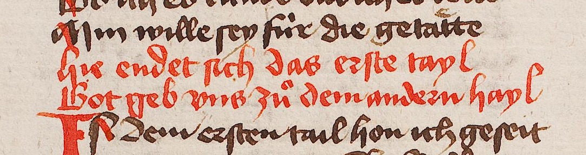

Visuelle Auszeichnungen und Verzierungen
Visuelle Auszeichnungen der Vorlage werden mit dem Element <hi> markiert:
- <hi> ( ›hervorgehoben‹ ) »markiert ein Wort oder eine Textpassage, das/die sich grafisch vom umgebenden Text abhebt, ohne dass ein inhaltlicher Grund dafür angegeben wird.« (↪ TEI)
- @rendition( ›Wiedergabe‹ ) gibt die Art der Auszeichnung mit einem Verweis auf eine Ressource von ›heiEDITIONS Concepts‹ an
- @hei:color
Es können mehrere <hi>-Elemente ineinander geschachtelt sein, wenn ein größeres visuell hervorgehobenes Textsegment ein kleineres Textsegment enthält, das seinerseits auf eine andere Weise visuell ausgezeichnet ist (z. B. ein vergrößerter Buchstabe in einem größeren unterstrichenen Textsegment). Liegen mehrere Typen visueller Hervorhebung auf einem einzigen Textsegment vor, können mehrere Angaben im Attribut @rendition an einem einzigen <hi> kombiniert werden.
Rote Strichelung
Versal
Kadelle
Abb. 1: Kadelle als Versal ohne sonstige strukturell-gliedernde Funktion in der ersten Zeile einer Spalte (Stuttgart, Württembergische Landesbibliotek, HB V 95, fol. 8r, https://digi.ub.uni-heidelberg.de/diglit/wlb_hb_v_95/0019 bzw. ↪ http://digital.wlb-stuttgart.de/purl/bsz343181304/page/19, Abbildung gemeinfrei).
<l>
<lb n="1"/>
<hi rendition="hc:Cadel">D</hi>ı wıle er wılt d&zig; meıſtírſchaft
</l>
Farbe
Textsegmente, die sich durch ihre Farbe abheben, können am Element <hi> mit dem Attribut @hei:color markiert werden. Mögliche Attributwerte sind dabei bislang z. B. Red, Blue und Green. Bei diesen Werten handelt es sich um keine Konzepte von ›heiEDITIONS‹, den Attributwerten wird also kein hc: vorangestelt.
Abb. 3: Mit roter Farbe geschriebener Text (Wolfenbüttel, Herzog August Bibliothek, Cod. Guelf. 37.19 Aug. 2°, fol. 21v, ↪ https://doi.org/10.11588/diglit.24512#0044).
<lg ana="hc:Couplet">
<l>
<lb/>
<hi hei:color="Red"><hi rendition="hc:Versal">H</hi>ıe endet ſıch das eꝛſte tayl</hi>
</l>
<l>
<lb/>
<hi hei:color="Red"><hi rendition="hc:Versal">G</hi>ot geb vns zu&osup; dem andeꝛn hayl</hi>
</l>
</lg>